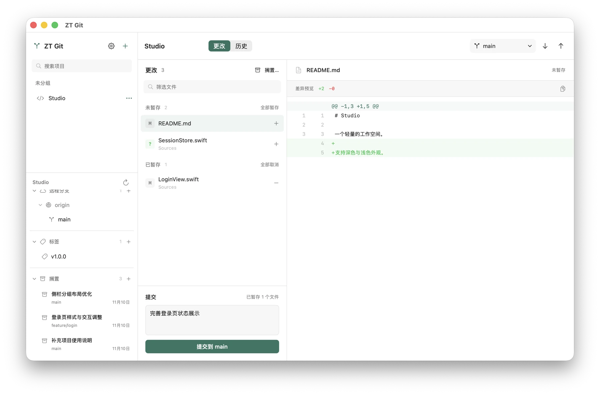
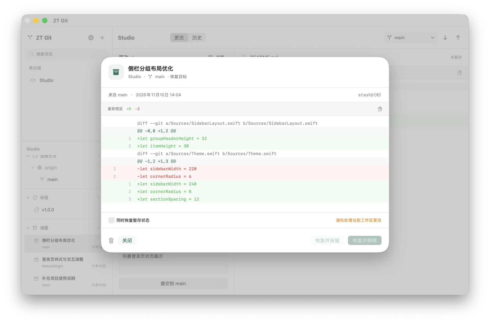

项目状态，一眼看清
添加本地 Git 项目并整理分组，在一个工作区中查看本地分支、远程分支、标签与搁置。
为 Apple Silicon Mac 而设计
项目、代码差异、提交历史与分支操作。
在一个专注的界面中，完成日常 Git 版本管理。
macOS 26.0 或更高版本 · Apple Silicon · 内置 Git

从日常更改，到版本回溯
添加本地 Git 项目并整理分组，在一个工作区中查看本地分支、远程分支、标签与搁置。
通过行号和颜色查看代码增删，逐个或批量暂存文件，填写提交说明并提交更改。
以列表或树状图浏览提交历史，搜索已加载的记录，查看提交涉及的文件和差异，也可导出指定版本的项目快照。
获取远程分支、拉取和推送更改；创建、切换或合并本地分支，并在支持的文本冲突中查看和编辑内容。

专注于手头的工作
应用监听当前项目和 Git 状态，在本地文件或仓库状态变化后自动刷新。远程的新提交仍需手动获取或拉取。
选择习惯的外观，或跟随 macOS 自动切换。应用内置 Git，日常使用无需另行安装 Git 命令行工具。